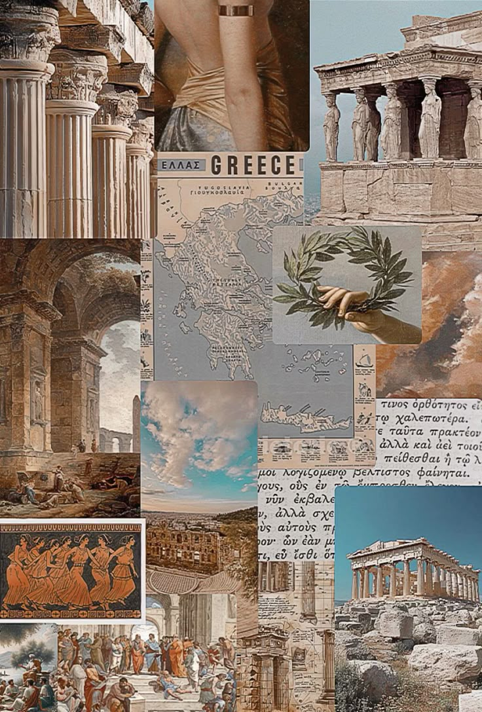
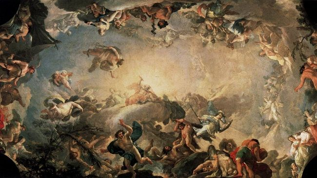

The history of philosophical thought in the ancient Greek world — from
early cosmology and the search for nature's first principles to
Socratic ethics, Plato and Aristotle's great systems, and the
Hellenistic schools that shaped philosophy across the Mediterranean
and beyond.
Introduction
Ancient Greek philosophy occupies a central place in the history of
Western thought. This does not mean that the Greeks were the first human
beings to ask philosophical questions; civilizations in Africa, Egypt,
Mesopotamia, Persia, India,
China, and elsewhere had already
developed profound traditions of reflection on reality, ethics,
political order, death, knowledge, and the cosmos.Greek philosophy
became especially influential because its arguments, texts, schools, and
intellectual institutions were transmitted through the Hellenistic
world, Rome, medieval
Islamic scholarship, and later European philosophy.
The ancient Greek philosophical tradition developed over many centuries
and cannot be reduced simply to Socrates,
Plato, and
Aristotle. Before them, thinkers in Ionia
and southern Italy investigated the fundamental structure of reality,
asking what the world is made of, how change is possible, whether nature
possesses an underlying order, and how human beings can distinguish
truth from appearance. These early philosophers are conventionally
called the Presocratics, although the label is imperfect because some
were contemporaries of Socrates rather than strictly his predecessors.
During the fifth century BCE, philosophy increasingly became concerned
with human life, politics, language, knowledge, and moral judgment. The
Sophists developed new forms of education centered on rhetoric and
argument, while Socrates made the examination of virtue and the good
life central to philosophical inquiry. Plato and Aristotle then created
philosophical systems of extraordinary range, addressing
metaphysics,
epistemology,
ethics, politics,
logic, psychology and the
study of nature.
This page follows that longer history: from the mythological and
intellectual world of early Greece to the first natural philosophers,
the Pythagorean and Eleatic investigations into number and being, the
Sophists and democratic culture of Athens, the Socratic revolution, the
great systems of Plato and Aristotle, and finally the Hellenistic
schools of Stoicism, Epicureanism, Cynicism, and Skepticism. Together,
these traditions created a philosophical inheritance that continued to
evolve long after the classical Greek world had disappeared.
Timeline at a Glance
c. 800–600 BCE
Homeric and Hesiodic poetry provide influential accounts of gods,
justice, human fate, and the origins of the cosmos
6th Century BCE
The Milesian thinkers begin systematic inquiries into nature,
principles, and the structure of the cosmos
c. 550–450 BCE
Pythagoreans, Heraclitus, Parmenides, and the Eleatics develop major
theories of number, change, being, and reality
5th Century BCE
The Sophists and Socrates transform philosophical attention toward
language, ethics, politics, knowledge, and human life
c. 387–322 BCE
Plato's Academy and Aristotle's Lyceum establish major traditions of
systematic philosophical inquiry
323 BCE onward
Hellenistic philosophy spreads across the Mediterranean through
Stoicism, Epicureanism, Skepticism, Cynicism, and other schools
🏺 Greece Before Philosophy

The ancient Greek world was a network of independent communities,
maritime trade routes, religious traditions, and competing political
cultures.
Before philosophy emerged as a distinct intellectual activity, Greek
communities already possessed rich traditions for thinking about the
world and the human condition. Homer's
Iliad and
Odyssey, together with Hesiod's Theogony and Works and Days,
explored questions of justice, power, fate, mortality, divine order,
human excellence, and the origins of the cosmos. Myth was therefore not
simply irrational storytelling; it was one of the major cultural
frameworks through which Greeks interpreted nature and human existence.
The Greek world was also politically fragmented. Rather than forming a
single unified nation, it consisted of numerous independent
poleis, or city-states, including Athens, Sparta, Corinth,
Thebes, and Miletus. Their political systems differed greatly, ranging
from forms of monarchy and oligarchy to the participatory democracy that
developed in Athens. Competition between communities encouraged military
conflict, but trade, colonization, travel, and migration also created
extensive contact across the Mediterranean and the Near East.
Greek intellectual life developed within this wider world of cultural
exchange. Greek thinkers encountered older traditions of astronomy,
mathematics, administration, and cosmology from Egypt and the ancient
Near East, while also creating distinctive forms of argument and
explanation within their own social settings. The emergence of
philosophy should therefore not be understood as an isolated miracle in
which Greek thought suddenly appeared without historical context. It was
part of a broader ancient world in which different civilizations
exchanged goods, techniques, stories, and intellectual resources.
What gradually distinguished the earliest Greek philosophers was a
growing attempt to explain the world through principles thought to be
inherent within nature itself. Instead of asking only which god caused a
particular event, they increasingly asked what underlying processes,
substances, structures, and causes might make the event intelligible.
This change was neither instantaneous nor a complete rejection of
religion, but it helped establish a new style of inquiry that later
philosophers would develop into more systematic disciplines.
1️⃣ The Birth of Greek Rational Inquiry
From Myth to Nature
Thales of Miletus became a traditional symbol of the early Greek
search for natural principles underlying the world.
The first major chapter in the history of Greek philosophy developed in
Ionia, particularly in the prosperous city of
Miletus on the western coast of
Asia Minor. Thinkers traditionally associated with the Milesian school —
Thales, Anaximander, and Anaximenes — attempted to identify an
underlying principle, or archê, from which the changing world
could be understood. Their answers differed, but the shared intellectual
problem was revolutionary: beneath the enormous diversity of things,
might there be a more fundamental order?
Thales was traditionally associated with the claim that water is the
fundamental principle of all things. Whether later reports preserve his
exact reasoning is difficult to determine, because no undisputed
philosophical work by him survives. Nevertheless, ancient writers
regarded him as an important figure because he represented a new type of
inquiry into causes and principles. The significance of Thales therefore
lies not simply in the claim that everything is water, but in the
attempt to search for a unified natural explanation of the world.
Anaximander proposed something more
abstract: the apeiron, often translated as the boundless or
indefinite. Rather than identifying one familiar physical element as the
source of everything, he suggested that the origin of the world must be
a more fundamental and indeterminate principle from which opposites
emerge. Anaximenes, by contrast, identified air as the primary substance
and attempted to explain different forms of matter through processes
such as rarefaction and condensation.
These thinkers did not separate philosophy from science in the modern
sense. Questions about the origin of the cosmos existed alongside
investigations into astronomy, geography, meteorology, and living
things. Their importance lies partly in this broad intellectual
ambition: the world was treated as something capable of investigation,
comparison, explanation, and rational reconstruction. The early Greek
search for
archê therefore became one of the foundations of later
metaphysics and natural philosophy.
2️⃣ Number, Change & the Problem of Being
Pythagoreans, Heraclitus, and the Eleatics

Early Greek philosophy developed competing explanations of number,
harmony, change, permanence, and the nature of reality.
As Greek philosophy expanded beyond Miletus, thinkers began asking
questions that were increasingly abstract. The Pythagorean tradition,
associated with Pythagoras and later
communities influenced by him, connected mathematics, harmony,
cosmology, and the disciplined life. Number appeared not merely as a
practical tool for calculation but as a key to understanding order and
proportion in the universe. Musical harmony and mathematical
relationships suggested that reality might possess an intelligible
structure deeper than ordinary sensory appearance.
At roughly the same time, Heraclitus of Ephesus developed a striking
philosophy centered on change, opposition, and the underlying
intelligibility of the cosmos. Later tradition summarized his thought
through the famous image of a river in constant movement, although his
surviving fragments are complex and should not be reduced to the simple
slogan that "everything changes." Heraclitus also used the concept of
logos to describe an intelligible order or account through
which the apparent conflict and transformation of the world could be
understood.
The Eleatic philosophers presented an almost opposite challenge.
Parmenides argued that genuine reason leads to the conclusion that what
truly is cannot simply come into being from nothing or disappear into
nothing. This produced a radical philosophical problem: if reality
genuinely changes, how can something become what it previously was not?
Parmenides therefore distinguished sharply between the path of truth and
the unreliable appearances presented by ordinary experience.
Zeno of Elea, traditionally associated with Parmenides, became famous
for paradoxes designed to expose difficulties in common assumptions
about motion and plurality. His arguments forced later philosophers and
mathematicians to confront questions about infinity, continuity, space,
and motion. Together, the Pythagoreans, Heraclitus, Parmenides, and Zeno
transformed Greek philosophy from a search for physical substances into
a deeper investigation of mathematics, logic, change, and the meaning of
existence itself.
3️⃣ Explaining a Changing Cosmos
The Later Presocratic Philosophers
Later early Greek philosophers attempted to reconcile the reality of
change with arguments for an underlying and enduring structure of
being.
The philosophical challenge created by
Parmenides was difficult to ignore. If
reality is genuinely one and unchanging, as Eleatic reasoning appeared
to suggest, how can the ordinary world of movement, growth, death, and
transformation be explained? Several later thinkers attempted to solve
this problem without simply abandoning either rational argument or the
evidence of experience. Their theories introduced increasingly
sophisticated accounts of matter, causation, and cosmic structure.
Empedocles proposed that all physical things are composed from four
enduring roots — traditionally identified as earth, water, air, and
fire. Change does not require something to come from absolute
nothingness; instead, the elements combine and separate. Empedocles
explained these processes through two opposing forces often translated
as Love and Strife, representing attraction and separation. His theory
attempted to preserve permanence at the level of the basic elements
while explaining the constantly changing world experienced by human
beings.
Anaxagoras introduced another influential solution. He argued that the
world contains an immense diversity of ingredients and that cosmic order
is initiated and arranged by Nous, or Mind. This idea gave
intelligence an important role in explaining the organization of the
cosmos. Although later philosophers criticized aspects of his theory,
the attempt to explain order through an intellectual principle would
remain important in Greek metaphysics and theology.
Leucippus and
Democritus developed atomism, one of the
most famous materialist theories of the ancient world. According to this
approach, reality consists fundamentally of indivisible bodies — atoms —
moving through empty space. Different objects arise from differences in
the arrangement, position, and movement of these atoms. Ancient atomism
was not modern physics, but it was a powerful philosophical attempt to
explain change, perception, and material diversity without appealing to
supernatural intervention.
The thinkers conventionally grouped as Presocratics were therefore far
more diverse than the name suggests. Their inquiries extended beyond
cosmology into mathematics, perception, knowledge, religion, ethics, and
the nature of explanation. Most of their complete works have been lost,
and modern knowledge often depends on fragments and reports preserved by
later writers. Yet the questions they raised — What exists? What causes
change? Can reason correct the senses? What is the structure of nature?
— became permanent problems of philosophy.
4️⃣ The Sophists, Democracy & the Power of Argument
Philosophy Enters Public Life
Fifth-century Athens created an environment in which rhetoric,
education, political argument, and philosophical debate became closely
connected.
During the fifth century BCE, the center of Greek intellectual life
increasingly moved toward questions about human society. Athens became
especially important because its democratic institutions required
citizens to participate in assemblies, courts, and public debate.
Success in political life depended heavily on the ability to speak,
persuade, analyze arguments, and respond to opponents. This social world
created new demand for education in rhetoric, language, and practical
reasoning.
The Sophists emerged within this environment as a diverse group of
professional educators and intellectuals who traveled through the Greek
world. They did not form a single philosophical school and did not share
one unified doctrine. Thinkers such as Protagoras, Gorgias, Hippias, and
Prodicus addressed different problems, but many became associated with
the study of rhetoric, language, argument, political life, and the
formation of human judgment.
Sophistic thought raised difficult questions about truth and convention.
Are moral laws grounded in nature, or are they created by human
communities? Does political authority reflect justice, power, or social
agreement? How far can rhetoric shape what people believe? These debates
were often expressed through the contrast between
physis, meaning nature, and nomos, meaning law,
convention, or custom. The distinction became one of the major
conceptual tools of Greek political and ethical philosophy.
Plato's dialogues frequently portray the Sophists critically, and this
portrayal strongly influenced their later reputation. Modern
scholarship, however, emphasizes their diversity and their importance to
the development of philosophy. The Sophists contributed to debates about
ethics, politics, language, logic, education, and religion, while also
forcing philosophers to ask whether persuasive argument and genuine
knowledge are always the same thing.
5️⃣ The Socratic Turn
From the Cosmos to the Examined Life
Socrates became a defining figure of ancient philosophy through his
commitment to questioning, ethical inquiry, and intellectual
self-examination.
Socrates transformed the direction of Greek
philosophy, although the exact nature of that transformation is
difficult to reconstruct. He wrote no philosophical works of his own,
and modern knowledge of him comes primarily through the writings of
others, especially Plato and Xenophon. These sources do not present an
identical portrait, which means that historians must distinguish
carefully between the historical Socrates and the philosophical
character who appears in later dialogues.
Socratic inquiry focused strongly on questions of human life. What is
justice? What is courage? What is piety? What is virtue? Socrates often
approached these questions by asking people to define concepts they
believed they understood. Through a sequence of questions and answers,
contradictions could be exposed and assumptions reconsidered. This style
of philosophical dialogue later became known as the Socratic method,
although the historical practice was more complex than any single modern
formula suggests.
Socrates placed extraordinary importance on the examination of one's own
beliefs and character. Knowledge and virtue became closely connected in
his philosophical image: a person who genuinely understands what is good
should be transformed by that understanding. This emphasis shifted
philosophical attention toward ethics and the question of how a human
being ought to live, without entirely eliminating the earlier Greek
interest in nature and cosmology.
In 399 BCE, Socrates was tried by an Athenian court on charges commonly
translated as impiety and corrupting the youth. He was found guilty and
sentenced to death. His refusal to abandon philosophical examination
became, particularly through Plato's writings, a powerful symbol of
intellectual independence and the tension that can arise between the
questioning individual and political authority.
Socrates also stands at the center of a broader network of philosophical
traditions. His followers and associates developed different schools and
approaches, including the Cyrenaics, Cynics, Megarians, and the Academy
founded by Plato. The so-called Socratic turn was therefore not simply
the achievement of one isolated individual. It represented a wider
transformation in Greek philosophy toward ethics, argument, education,
politics, and the examination of human beliefs.
6️⃣ Plato, Aristotle & the Great Philosophical Systems
Plato, Aristotle, and Systematic Philosophy
Plato and Aristotle transformed Greek philosophy into increasingly
systematic investigations of reality, knowledge, ethics, politics, and
reasoning.
After Socrates's death, his student
Plato became one of the most influential
philosophers in history. Plato founded the Academy in Athens and wrote
philosophical dialogues that combined argument, literary imagination,
ethical inquiry, political reflection, and metaphysical speculation.
Through the figure of Socrates, his works examine questions about
justice, knowledge, love, education, political authority, and the nature
of reality.
Plato is especially associated with the Theory of Forms, according to
which the changing world perceived by the senses does not provide the
highest level of reality or knowledge. Mathematical objects and concepts
such as justice, beauty, and equality raise the possibility that human
thought can grasp stable intelligible structures beyond particular
changing things. The exact interpretation of Plato's Forms remains a
major subject of philosophical scholarship, but the distinction between
appearance and intelligible reality became one of the defining themes of
Platonism.
Plato's political philosophy was equally influential. In
The Republic, he investigated the nature of justice in both the
individual and the political community, developing the famous image of
philosopher-rulers whose education would prepare them to understand the
good of the whole community. His later works continued to reconsider
politics, law, education, and the limitations of ideal political
arrangements. Plato's importance lies partly in the extraordinary range
of questions he treated and in his effort to understand them as
connected parts of a larger philosophical vision.
Aristotle studied at Plato's Academy for
many years before developing his own philosophical approach and founding
the Lyceum. While deeply influenced by his teacher, Aristotle criticized
the separation of Forms from individual physical things and developed an
account of substance in which form and matter are connected within
concrete beings. His metaphysics investigated causation, change,
potentiality, actuality, and the different ways in which things can be
said to exist.
Aristotle's intellectual range was enormous. He systematized important
forms of logical reasoning, especially syllogistic inference; developed
virtue ethics around the concept of eudaimonia, often
translated as flourishing; examined political communities and
constitutions; investigated living organisms and the natural world; and
produced works that later became central to metaphysics, psychology,
rhetoric, and literary theory. By the time of his death in 322 BCE,
Greek philosophy had developed institutions and conceptual systems whose
influence would extend across the Mediterranean and far beyond the
ancient Greek world.
7️⃣ The Hellenistic World & the Legacy of Greek Philosophy
Greek Philosophy After Aristotle
Greek philosophy did not end with Aristotle. The death of Alexander the
Great in 323 BCE marked the beginning of a new historical period in
which Greek language and culture spread across large regions of the
eastern Mediterranean, Egypt, and western Asia. Within this Hellenistic
world, philosophy increasingly developed as a practical way of life as
well as a theoretical investigation. New schools asked how individuals
could achieve tranquility, freedom, happiness, and wisdom in an unstable
and rapidly changing world.
Stoicism, founded by Zeno of Citium,
taught that human beings should seek to live in accordance with reason
and nature. Stoic philosophers distinguished between what lies within
human control and what does not, arguing that virtue rather than wealth,
reputation, or external success is the foundation of a good life. Stoic
ideas later became influential in Roman philosophy through thinkers such
as Seneca, Epictetus, and Marcus Aurelius.
Epicurus developed another influential philosophical path. Epicureanism
combined an atomistic account of nature with an ethical ideal centered
on freedom from unnecessary fear and disturbance. Contrary to the modern
stereotype that treats Epicureanism as simple indulgence, Epicurus
emphasized moderation, friendship, intellectual reflection, and the
reduction of destructive anxieties, particularly fear of death and
supernatural punishment.
Other traditions also flourished. Cynic philosophers challenged
conventional ideas about wealth, social status, and political respect,
often using provocative forms of public criticism. Skeptical traditions
questioned whether human beings could achieve the certainty claimed by
competing philosophical systems. Together, these schools turned
philosophical disagreement itself into a subject of reflection: if wise
thinkers reach opposing conclusions, what degree of confidence should a
rational person place in any particular belief?
The legacy of Greek philosophy then passed through many civilizations
rather than remaining exclusively Greek. Roman thinkers adapted Greek
philosophical traditions to new political and cultural circumstances.
Greek works were later studied, translated, criticized, and transformed
by philosophers working in Syriac and Arabic during the development of
Islamic intellectual traditions. Medieval European thinkers encountered
Greek philosophy through complex chains of preservation and translation,
while Renaissance and modern philosophers continued to argue with Plato,
Aristotle, the Stoics, the Skeptics, and the atomists. Ancient Greek
philosophy therefore became not a finished chapter of history but a
continuing conversation.
👤 Major Thinkers
The major philosophers associated with the long development of ancient
Greek philosophical thought.
🌊 Archê — the search for a fundamental principle or
origin underlying reality
🔢 Number and Harmony — the Pythagorean idea that
mathematical relationships reveal important structures of the cosmos
🌊 Change and Being — competing theories of whether
reality is fundamentally changing, permanent, or both
⚛ Atomism — explaining physical reality through atoms
moving through empty space
🗣 Rhetoric and Argument — examining the relationship
between persuasion, language, truth, and political life
❓ The Socratic Method — pursuing philosophical
clarity through questioning, dialogue, and the examination of
assumptions
🌌 The Theory of Forms — Plato's exploration of
stable intelligible reality beyond changing particular things
⚖ Virtue Ethics — understanding the good life through
character, practical wisdom, and human flourishing
🧠 Formal Logic — Aristotle's systematic
investigation of valid reasoning and inference
🌿 Eudaimonia — the philosophical idea of living or
flourishing well as a human being
🌍 Influence on Later Philosophy
Ancient Greek philosophy became one of the most influential intellectual
traditions in world history because later civilizations repeatedly
preserved, translated, criticized, and transformed its ideas. The
Hellenistic kingdoms carried Greek language and philosophical schools
across the eastern Mediterranean, while Roman intellectuals adapted
Platonic, Aristotelian, Stoic, Epicurean, and Skeptical ideas to new
political and cultural circumstances. Greek philosophy was therefore
already an international intellectual tradition long before the modern
concept of the Western canon emerged.
The transmission of Greek philosophy through the Islamic world was
especially important. Scholars working in Arabic translated and engaged
deeply with Greek philosophical and scientific texts, particularly those
associated with Aristotle and the late ancient tradition. Philosophers
such as Al-Farabi, Avicenna, and Averroes did not merely preserve Greek
ideas; they developed new philosophical systems and interpretations that
later influenced Jewish and Christian thinkers as well as subsequent
Islamic philosophy.
Medieval European philosophy likewise developed through sustained
engagement with Plato, Aristotle, and later Greek traditions. Aristotle
became particularly important within medieval universities, while
Platonism continued to influence metaphysics, theology, and theories of
knowledge. Thinkers such as Thomas Aquinas attempted to integrate
Aristotelian philosophy with Christian theology, creating intellectual
systems that would themselves become major parts of the history of
philosophy.
Modern philosophy continued the argument. Rationalists, empiricists,
idealists, materialists, existentialists, and contemporary philosophers
repeatedly returned to questions first formulated in ancient Greek
thought: What exists? How do we know? What makes an action good? What is
justice? How should political communities be organized? What counts as a
valid argument? The answers have changed enormously, but many of the
conceptual problems remain recognizable.
📊 Quick Facts
Time Period: c. 6th century BCE to the Hellenistic
and Roman continuation of Greek philosophical traditions
Key Regions: Ionia, Athens, southern Italy, Sicily,
the Aegean world, and the wider Hellenistic Mediterranean
Major Figures: Thales, Pythagoras, Heraclitus,
Parmenides, Democritus, Protagoras, Socrates, Plato, Aristotle, and
later Hellenistic philosophers
Central Questions: What exists, what causes change,
how can humans know the truth, what is justice, and how should one
live?
Major Schools: Academy, Lyceum, Stoicism,
Epicureanism, Cynicism, Skepticism, and other Hellenistic traditions
Lasting Influence: Roman philosophy, Islamic
philosophy, medieval thought, Renaissance humanism, modern philosophy,
science, ethics, logic, and political theory
While philosophical traditions developed across the Greek world, the
Indian subcontinent was also producing major traditions of philosophical
inquiry. The Upanishadic thinkers, Buddhist philosophers, Jain teachers,
and later classical schools explored consciousness, reality, knowledge,
ethics, causation, and liberation from suffering through intellectual
traditions with their own distinctive concepts and methods.